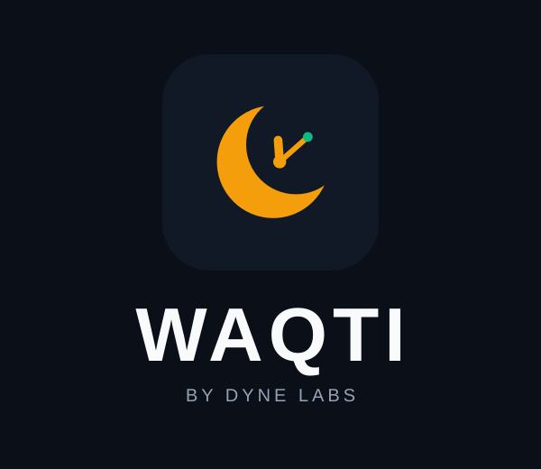
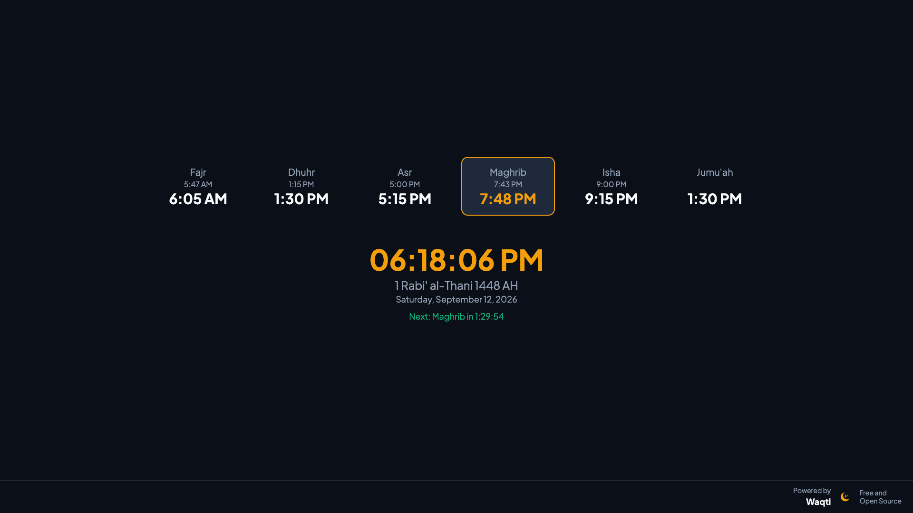
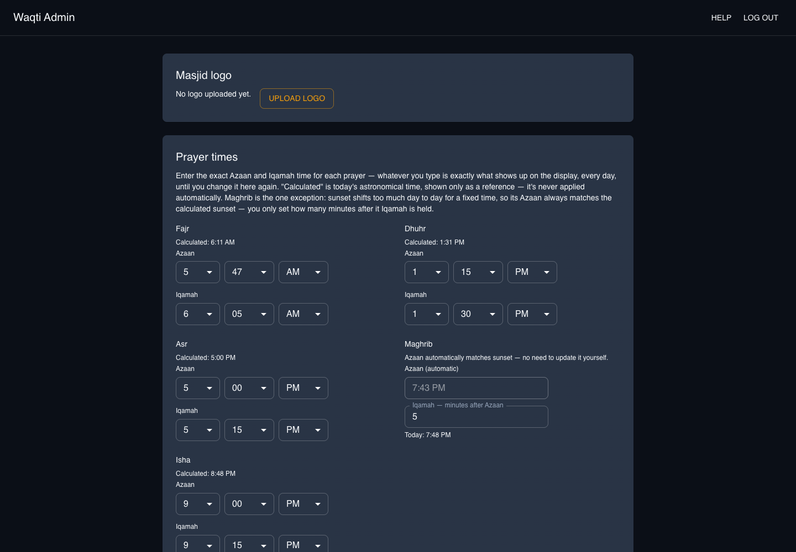

Free, open-source, offline-first digital signage for masjids — prayer times, Hijri date, announcements, and Janazah alerts, running on a screen you already own.

Nothing more, nothing less — built from real feedback at a live masjid deployment.
Astronomical calculation with your choice of method (ISNA, MWL, Umm al-Qura, and more), plus the Hijri date alongside the Gregorian one.
Type the real Azaan and Iqamah time for each prayer, same as a printed schedule. Maghrib automatically tracks sunset so it's never stale.
Runs entirely on its own once configured — no internet dependency for core function, no third-party API, no recurring cost.
Upload image flyers or text/verse slides — Full Screen or In Screen, shown above the prayer-times ribbon, your choice.
An automatic countdown before each prayer and a "silence your phone" reminder for a configurable window afterward.
One click from the admin panel publishes a full-screen emergency notice to every connected display, instantly.

No jargon, no offsets to puzzle over — every setting is either a plain time, a switch, or a short number, with an in-app Help page for anyone who gets stuck.
No database to install, no server to rent — just an executable and a screen.
Grab waqti.exe from the latest release — no other tools required on the kiosk PC.
Double-click to start. The one-time admin passphrase prints to the console on first run.
Open /admin to set your location and prayer times, /display on the kiosk screen.
Waqti is MIT licensed — download it, run it, modify it, self-host it.